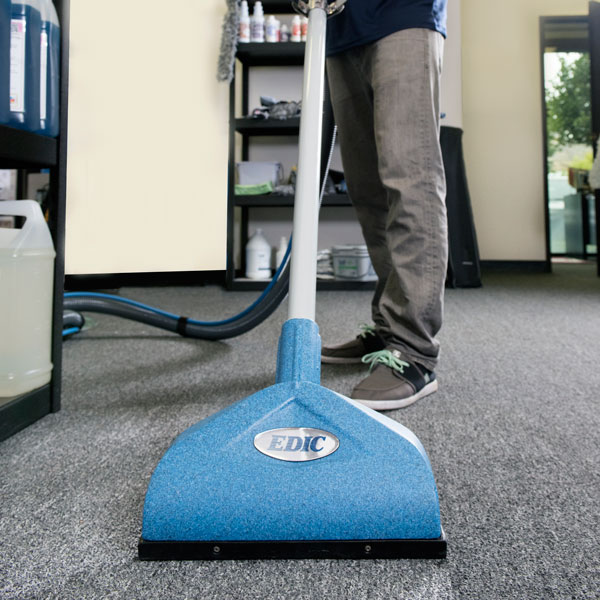

How are we different from the rest?
We know our state-of-the-art equipment is only as effective as the technician who’s using it. That’s why we train our technicians thoroughly in the methods and with the tools needed to get the deep-clean results we’re known for.
It starts in our home office where experts are dedicated to each of our services from carpet cleaning to tile, hardwood, furniture and more. These experts are always looking for better ways to clean the surfaces in your home, constantly refining our process to ensure our customers receive the deepest cleaning possible.
This knowledge is passed on to our technicians across the country through our corporate training program. This curriculum consists of hands-on and classroom learning, during which we cover safety, customer service and cleaning methods. And we’re always learning. Our technicians continue their education through a web-based program that keeps them up to date on the latest research and developments.
Beyond these programs, many of our technicians receive additional intensive training for certifications through third parties, such as the Institute of Inspection Cleaning and Restoration Certification (IICRC).